Помогаю исцелять компании для эффективного управления IT, sale, marketing
Нахожу нетиповые решения и верю, что тупиковых ситуаций не бывает
Ко мне обращаются в ситуациях:
рекомендации по улучшению управлении персоналом
массового оттока сотрудников
сложности с подбором персонала
падения продуктивности среди коллектива
создания hr отделов под расширение штата
обучения hr-менеджеров
Мои услуги
Личные консультации
Провожу индивидуальные консультации для владельцев бизнеса
и руководителей высшего уровня, чтобы помочь вам развивать свой бизнес еще успешнее, или рассказываю,
как вернуться назад в найм
HR Tech
Развиваю свой собственный HR Tech: бота для поиска работы. Этот инновационный инструмент поможет ускорить и упростить процесс подбора работы тем, кто не пошел работать в IT, сэкономив ваше время и ресурсы
Huntingt
По вашему запросу, проводится поиск уникальных специалистов, которые удовлетворят особые требования вашей компании. Уровень: C-level, Head, Senior
Onboarding
Обеспечение гладкой интеграции новых сотрудников в ваш коллектив, чтобы они быстро и эффективно влились в рабочий процесс
Delivery Recruitment
Могу рассказать, как обеспечить постоянный поток кандидатов на ваши вакансии, а также оптимизировать процесс работы с ними
HR-Admin
Оказываю помощь во всех вопросах, связанных с трудовым правом, чтобы вы могли спокойно развивать свой бизнес, не волнуясь о юридических тонкостях
Запуск воронки найма
Разработка эффективной стратегии найма и продвижения вашего бренда работодателя на рынке труда. Это позволит привлечь лучших специалистов для вашего бизнеса.
HR-Marketing
Стоимость консультации от 10000₽
Вторая консультация со скидкой 10%
Далее по договоренности
Работаю в удаленном формате по РФ
Точная стоимость зависит от вашего запроса
Формат работы
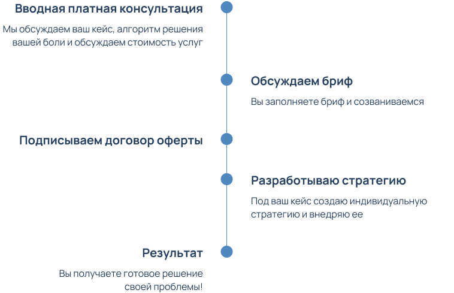
Преимущества работы со мной
Обо мне
HR лекарь, верю в devrel и делаю HR Tech для людей от HR
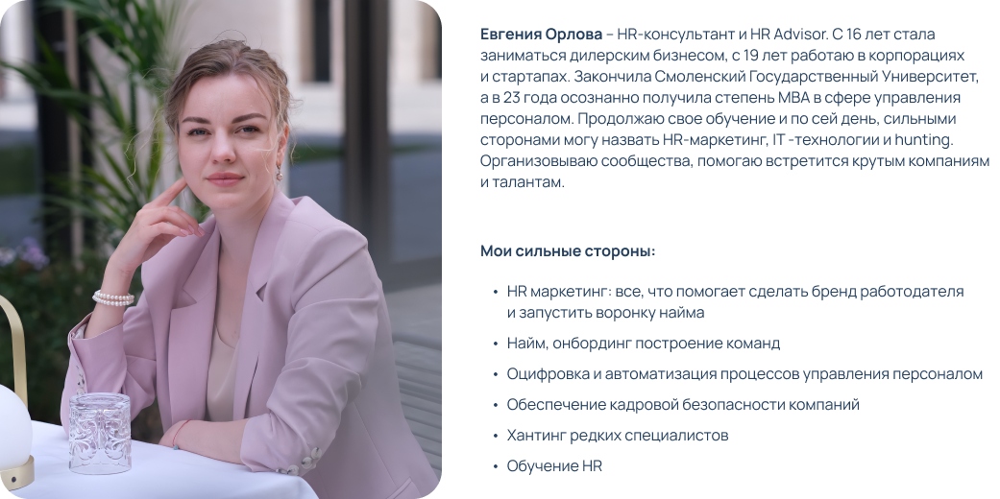
Прошла путь от ассистента до HR Advisor
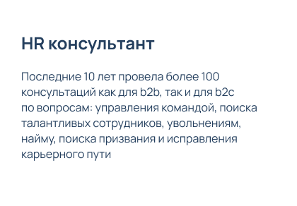
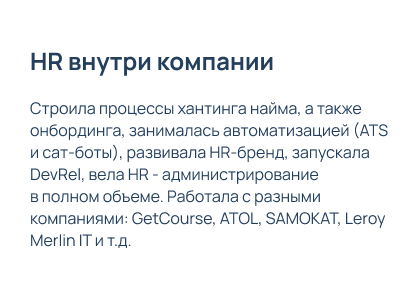
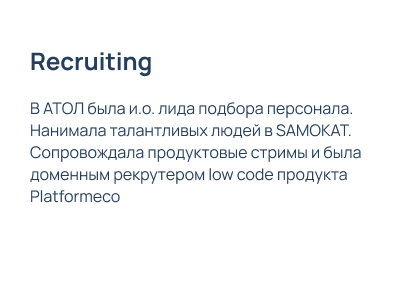
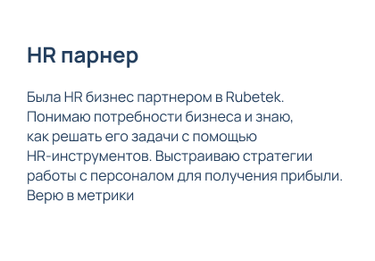
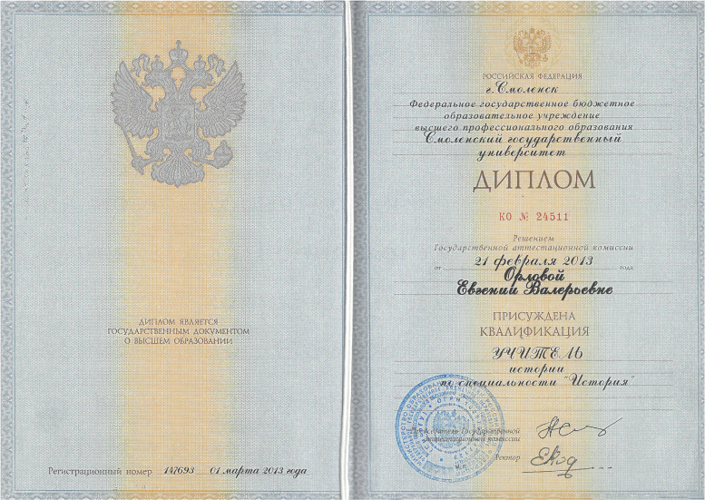
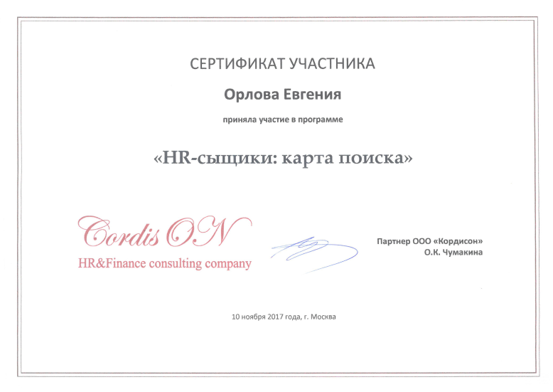
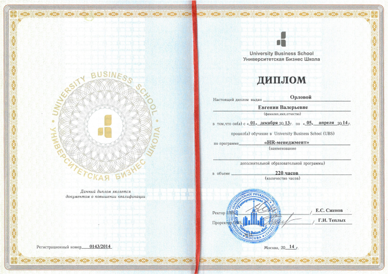
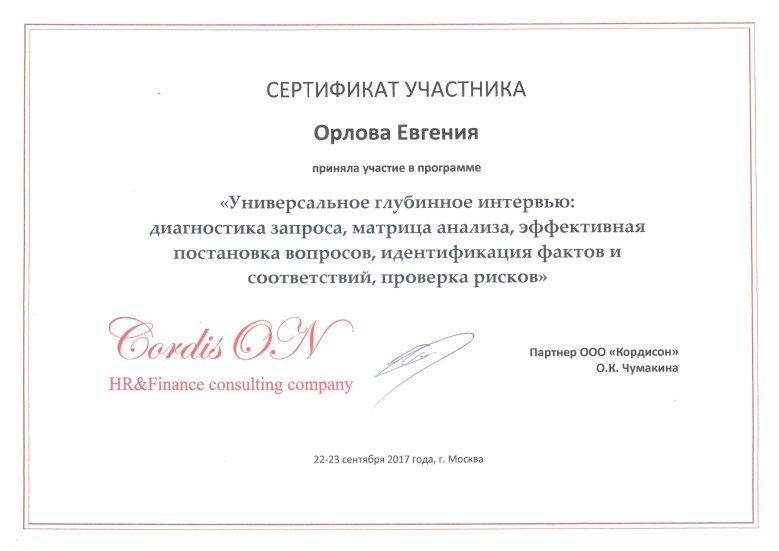
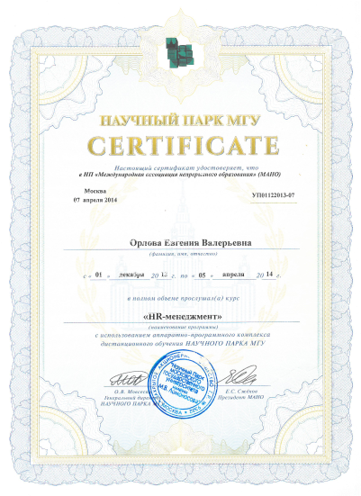
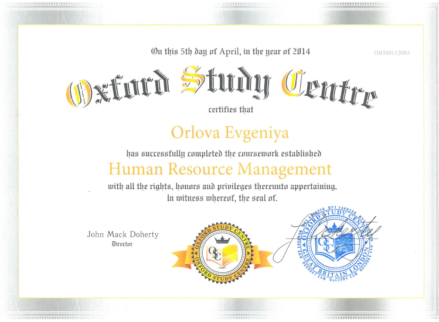
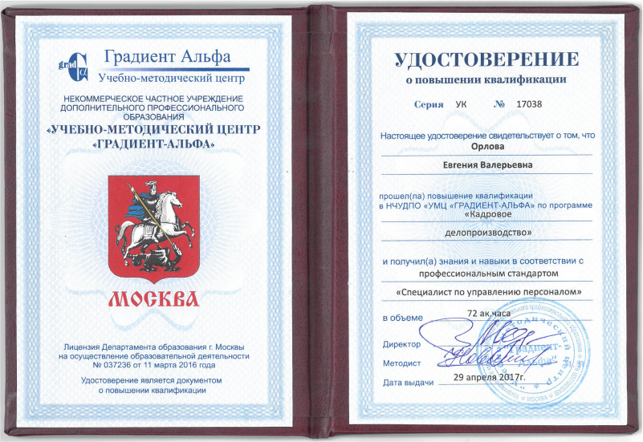
Отзывы
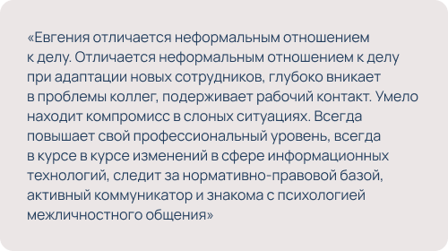
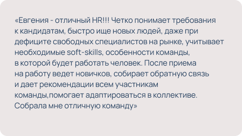
Часто задаваемые вопросы
Как найти работу?
В наше время, поиск работы может быть настоящим вызовом, особенно в условиях, когда количество
собеседований может достигать даже 30, 40 или 60 в месяц. Однако, справляться с этим множеством интервью
возможно, если придерживаться некоторых ключевых принципов, таких как:
Вера в себя и поддержка
Подготовка к собеседованиям
Реалистичные ожидания
Управление эмоциями
Оптимизация процесса
Учитесь и адаптируйтесь
И вот вы готовы к успешному поиску работы в мире, где количество собеседований не ограничивается, а возможности многогранны!
Что будет с рынком?
Российский рынок труда находится на пороге значительных изменений, обусловленных совокупностью факторов. Прогнозируется, что в 2024 году будет большой всплеск найма и рост числа вакансий в ИТ, но будет конкуренция - производственный сектор. Эти отрасли становятся ключевыми двигателями экономического развития страны, и вакансии в них будут представлять собой важные возможности для специалистов.
Следует отметить, что демографическая яма, связанная с уменьшением численности молодого населения, будет оказывать влияние на рынок труда. Это, в свою очередь, может привести к подъему заработных плат, так как спрос на рабочую силу будет превышать предложение. Одной из интересных тенденций будет увеличение спроса на специалистов старше 40-50 лет. Опыт и зрелость станут важными качествами, востребованными на рынке труда.
Более того, ожидается, что спрос на специалистов в обычных рабочих профессиях также значительно вырастет. Производственные предприятия и другие отрасли потребуют квалифицированных работников, обеспечивающих стабильность и функционирование базовых процессов. Это может предоставить новые возможности для многих людей, желающих развиваться в этих направлениях.
Однако с такими изменениями востребованности профессий может измениться и восприятие высшего образования: прогнозируется ростзначимости практических навыков и опыта в контексте быстро меняющейся экономической среды. Кроме того, появление альтернативных образовательных путей, таких как онлайн-курсы и специализированные программы, также может внести свой вклад в это изменение восприятия.
Понимание этих тенденций поможет как работникам, так и работодателям адаптироваться к изменяющейся среде и достичь успешных результатов.
Что будет с персоналом?
События последних лет оказали значительное воздействие на профессиональный мир и нашли отражение в жизни каждого работника. Период СВО и пандемии COVID-19 вызвал ряд сложностей, но также стал толчком для изменений и роста. Ниже - тренды, которые ожидаются в сфере труда:
Переосмысление здоровья и баланса
Вспышка заболеваний и выгораний в период СВО и пандемии оказала влияние на здоровье и психологическое состояние многих работников. Однако, после этого периода люди проявили невероятную устойчивость и способность к восстановлению. Важность поддержания баланса между работой, личной жизнью и заботой о своем здоровье стала более очевидной.
Всплеск интереса к IT и новым навыкам
Заметный рост интереса к IT-сфере и желание переквалифицироваться обусловлены, в том числе, популярностью высоких заработных плат в этой области. Однако, стоит помнить, что успех в IT требует не только энтузиазма, но и усиленной учебы, непрерывного обучения и постоянного развития навыков, а также уникального ядра личности.
Новые перспективы в сфере труда
Один из ключевых переворотов, который наблюдается, заключается в том, что процессы сокращений постепенно заканчиваются. Это означает, что рынок труда начинает восстанавливаться, и рабочих мест становится больше. Однако ситуация с изменениями в работе также меняется. Работники могут столкнуться с необходимостью выполнять несколько ролей сразу, что требует от них гибкости и адаптивности.
Важность оптимизма и обучения
Постоянные изменения в сфере труда и экономики могут вызвать беспокойство, но важно помнить, что оптимизм и вера в лучшее являются сильными мотиваторами. Обучение и развитие важны больше, чем когда-либо. Работники, которые готовы адаптироваться, учиться новому и совершенствовать свои навыки, будут востребованы на рынке труда.
Современная реальность требует гибкости, оптимизма и стремления к самосовершенствованию. Адаптация к новым условиям, баланс между работой и личной жизнью, а также готовность обучаться и развиваться - вот ключевые элементы успешной адаптации к пост-COVID эпохе. Однако, с правильным настроем и усилиями, каждый работник сможет выйти на новый уровень профессионального развития.